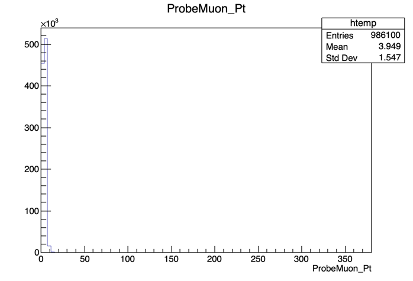
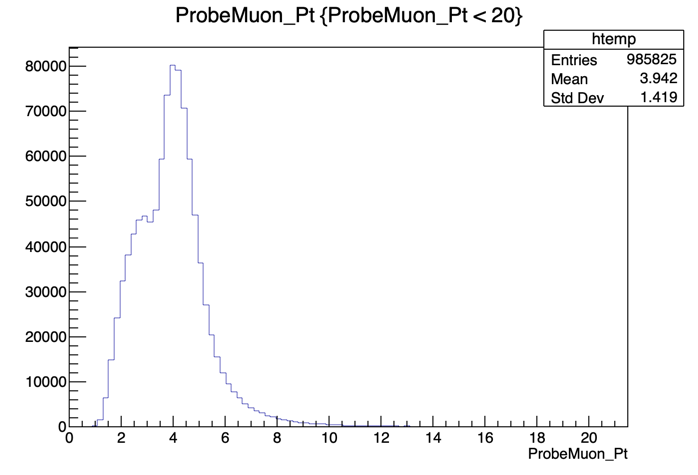
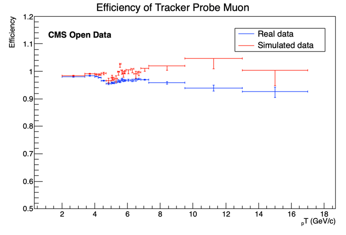

Fitting¶
Setting it up¶
In order to run this exercise you do not really need to be in a CMSSW area. It would be actually better if you worked outside your usual CMSSW_5_3_32 environment. So, if, for instance, you are working with the Docker container, instead of working on /home/cmsusr/CMSSW_5_3_32/src you could work on any directory you can create at the /home/cmsusr level. Alternatively, you could work directly on your own host machine if you managed to install ROOT on it.
For this example we assume you will be working in either the Docker container or the virtual machine.
Since we will be needing ROOT version greater than 6, then do not forget to set it up from LCG (as you learned in the ROOT pre-exercise) by doing:
source /cvmfs/sft.cern.ch/lcg/views/LCG_95/x86_64-slc6-gcc8-opt/setup.sh
Clone the repository and go to the fitting method tutorial:
git clone git://github.com/allanjales/TagAndProbe
cd TagAndProbe/efficiency_tools/fitting
A brief explanation of this repository¶
In this repository, you are only required to make changes to the Efficiency.C macro. These changes are highlighted as such:
/*-----------------------------------I N S E R T C O D E H E R E-----------------------------------*/
So when you see this comment, know that it's your turn to code! If you don't, the macro won't run and the following errors are to be expected:
Error
plaintext
In file included from input_line_11:1:
/Users/thomasgaehtgens/Desktop/CMS-tutorial/Efficiency.C:13:23: error: expected expression
bool DataIsMC = ... ;
^
/Users/thomasgaehtgens/Desktop/CMS-tutorial/Efficiency.C:15:23: error: expected expression
string MuonId = ... ;
^
/Users/thomasgaehtgens/Desktop/CMS-tutorial/Efficiency.C:17:23: error: expected expression
string quantity = ... ; //Pt, Eta or Phi
^
/Users/thomasgaehtgens/Desktop/CMS-tutorial/Efficiency.C:25:22: error: expected expression
double bins[] = {...};
^
/Users/thomasgaehtgens/Desktop/CMS-tutorial/Efficiency.C:26:21: error: expected expression
int bin_n = ...;
^
/Users/thomasgaehtgens/Desktop/CMS-tutorial/Efficiency.C:33:35: error: expected expression
init_conditions[0] = /*peak1*/;
^
/Users/thomasgaehtgens/Desktop/CMS-tutorial/Efficiency.C:34:35: error: expected expression
init_conditions[1] = /*peak2*/;
^
/Users/thomasgaehtgens/Desktop/CMS-tutorial/Efficiency.C:35:35: error: expected expression
init_conditions[2] = /*peak3*/;
^
/Users/thomasgaehtgens/Desktop/CMS-tutorial/Efficiency.C:36:35: error: expected expression
init_conditions[3] = /*sigma*/;
The Fitting Method¶
First, a brief explanation of the method we’ll be studying.
It consists on fitting the invariant mass of the tag & probe pairs, in the two categories: passing probes, and all probes. I.e., for the unbiased leg of the decay, one can apply a selection criteria (a set of cuts) and determine whether the object passes those criteria or not.
The procedure is applied after splitting the data in bins of a kinematic variable of the probe object (e.g. the traverse momentum, pT); as such, the efficiency will be measured as a function of that quantity for each of the bins.
So, in the picture below, on the left, let's imagine that the pT bin we are selecting is the one marked in red. But, of course, in that bin (like in the rest) you will have true ϒ decays as well as muon pairs from other processes (maybe QCD, for instance). The true decays would make up our signal, whereas the other events will be considered the background.
The fit, which is made in a different space (the invariant mass space) allows to statistically discriminate between signal and background. To compute the efficiency we simply divide the signal yield from the fits to the passing category by the signal yield from the fit of the inclusive (All) category. This approach is depicted in the middle and right-hand plots of the image below.
At the end of the day, then, you will have to make these fits for each bin in the range of interest.

Let's start exploring our dataset. From the cloned directory, type:
cd DATA/Upsilon/trackerMuon/
root -l T\&P_UPSILON_DATA.root
If everything's right, you should get something like:
Attaching file T&P_UPSILON_DATA.root as _file0...
U(TFile *) 0x7fe2f34ca270
Of course, you can explore this file, if you want, using all the tools you learn in the ROOT pre-exercise. This file contains ntuples that were obtained using procedures similar to the ones you have been learning in this workshop.
Note
In the following plots, remember that the units of the x axis are in GeV/c.
Now, before we start fitting the invariant mass it's important to look at it's shape first. To visualize our data's invariant mass, do (within ROOT):
root [] UPSILON_DATA->Draw("InvariantMass")

If you got the previous result, we're ready to go.
The dataset used in this exercise has been collected by the CMS experiment, in proton-proton collisions at the LHC. It contains 986100 entries (muon pair candidates) with an associated invariant mass. For each candidate, the transverse momentum (pT), rapidity(η) and azimuthal angle (φ) are stored, along with a binary flag PassingProbeTrackingMuon, which is 1 in case the corresponding probe satisfied the tracker muon selection criteria and 0 in case it doesn't.
Note
Note that it does not really matter what kind of selection criteria these ntuples were created with. The procedure would be the same. You can create your own, similar ntuples with the criteria that you need to study.
As you may have seen, after exploring the content of the root file, the UPSILON_DATA tree has these variables:
| InvarianMass | | PassingProbeTrackingMuon | | ProbeMuon_Pt | | ProbeMuon_Eta | | ProbeMuon_Phi|
We'll start by calculating the efficiency as a function of pT. It is useful to have an idea of the distribution of the quantity we want to study. In order to do this, we’ll repeat the steps previously used to plot the invariant mass, but now for the ProbeMuon_Pt variable.
root [] UPSILON_DATA->Draw("ProbeMuon_Pt")

Hmm.. seems like our domain is larger than we need it to be. To fix this, we can apply a constraint to our plot. Try:
root [] UPSILON_DATA->Draw("ProbeMuon_Pt", "ProbeMuon_Pt < 20")

Exit ROOT and get back to the main area:
root [] .q
cd ../../../
Now that you're acquainted with the data, open the Efficiency.C file.
You'll have to make some small adjustments to the code in this section (from line:19 to line:34):
/*-----------------------------------I N S E R T C O D E H E R E-----------------------------------*/
string quantity = "Pt"; double bins[] = {0., 2.0, 3.4, 4.0, 4.4, 4.7, 5.0, 5.6, 5.8, 6.0, 6.2, 6.4, 6.6, 6.8, 7.3, 9.5, 13.0, 17.0, 40.};
//string quantity = "Eta"; double bins[] = {-2.4, -1.8, -1.4, -1.2, -1.0, -0.8, -0.5, -0.2, 0, 0.2, 0.5, 0.8, 1.0, 1.2, 1.4, 1.8, 2.4};
//string quantity = "Phi"; double bins[] = {-3.0, -1.8, -1.6, -1.2, -1.0, -0.7, -0.4, -0.2, 0, 0.2, 0.4, 0.7, 1.0, 1.2, 1.6, 1.8, 3.0};
int bin_n = sizeof(bins)/sizeof(*bins) - 1;
/*------------------------------------------------------------------------------------------------------*/
//Now we must choose initial conditions in order to fit our data
double *init_conditions = new double[4];
/*-----------------------------------I N S E R T C O D E H E R E-----------------------------------*/
init_conditions[0] = /*peak1*/;
init_conditions[1] = /*peak2*/;
init_conditions[2] = /*peak3*/;
init_conditions[3] = /*sigma*/;
/*------------------------------------------------------------------------------------------------------*/
We'll start by choosing the desired bins for the transverse momentum. If you're feeling brave, choose appropriate bins for our fit remembering that we need a fair amount of data in each bin (more events mean a better fit!). If not, we've left a suggestion that you can paste onto the Efficiency.C file. Start with the pT variable.
Bin Suggestion
//-- BINS USED TO CALCULATE PT
double bins[] = {0., 2.0, 3.4, 4.0, 4.4, 4.7, 5.0, 5.6, 5.8, 6.0, 6.2, 6.4, 6.6, 6.8, 7.3, 9.5, 13.0, 17.0, 40.};
//-- BINS USED TO CALCULATE PHI
double bins[] = {-2.4, -1.8, -1.4, -1.2, -1.0, -0.8, -0.5, -0.2, 0, 0.2, 0.5, 0.8, 1.0, 1.2, 1.4, 1.8, 2.4};
//-- BINS USED TO CALCULATE ETA
double bins[] = {-3.0, -1.8, -1.6, -1.2, -1.0, -0.7, -0.4, -0.2, 0, 0.2, 0.4, 0.7, 1.0, 1.2, 1.6, 1.8, 3.0};
Now that the bins are set, we'll need to define the initial parameters for our fit. You can try to get a good 1st approximation from the plot of the invariant mass that we got before:

or use the suggested values
Suggestion for the Initial Values
Try the following initial values:
init_conditions[0] = 9.46030;
init_conditions[1] = 10.02326;
init_conditions[2] = 10.3552;
init_conditions[3] = 0.08;
We are now ready to execute the fits!
The Fit¶
We execute a simultaneous fit using a Gaussian curve and a Crystall Ball function for the fist peak (1S) and a gaussian for the remaining peaks. For the background we use a Chebychev polynomial. The function used, doFit(), is implemented in the source file src/DoFit.cpp and it was based on the RooFit library.
You can find generic tutorials for this library here. If you’re starting with RooFit you may also find this one particularly useful.
You won't need to do anything in src/DoFit.cpp but you can check it out if you're curious.
Check out src/DoFit.cpp
The code here is presented in smaller "digestible" chunks, so it's easier to understand.
We begin by linking our dataset to a usable object ( the TTree ) and by creating a TCanvas to store the fit plots.
we then define a few RooRealVar and RooFormulaVar objects will be used to select the bin associated to the string condition (i.e. "ProbeMuon_Pt 10 && ProbeMuon_Pt < 10"). After spliting the original dataset, the resulting two RooDataSet are used to create two binned RooDataHist in which we'll perform the fits.
double* doFit(string condition, string MuonID_str, string quant, double* init_conditions, bool save = true) // RETURNS ARRAY WITH [yield_all, yield_pass, err_all, err_pass] -> OUTPUT ARRAY
{
string MuonID_file = "";
if (MuonID_str == "PassingProbeTrackingMuon")
MuonID_file = "trackerMuon";
if (MuonID_str == "PassingProbeStandAloneMuon")
MuonID_file = "standaloneMuon";
if (MuonID_str == "PassingProbeGlobalMuon")
MuonID_file = "globalMuon";
TFile *file0 = TFile::Open(("DATA/Upsilon/" + MuonID_file + "/T&P_UPSILON_DATA_MC.root").c_str());
TTree *DataTree = (TTree*)file0->Get(("UPSILON_DATA"));
double _mmin = 9; double _mmax = 10.8;
RooRealVar MuonID(MuonID_str.c_str(), MuonID_str.c_str(), 0, 1); //Muon_Id
RooRealVar InvariantMass("InvariantMass", "InvariantMass", _mmin, _mmax);
double* limits = new double[2];
if (quant == "Pt") {
limits[0] = 0;
limits[1] = 40;
}
if (quant == "Eta") {
limits[0] = -3;
limits[1] = 3;
}
if (quant == "Phi") {
limits[0] = -2;
limits[1] = 2;
}
RooRealVar quantity(("ProbeMuon_" + quant).c_str(), ("ProbeMuon_" + quant).c_str(), limits[0], limits[1]);
RooFormulaVar* redeuce = new RooFormulaVar("PPTM", condition.c_str(), RooArgList(quantity));
RooDataSet *Data_ALL = new RooDataSet("DATA", "DATA", DataTree, RooArgSet(InvariantMass, MuonID, quantity),*redeuce);
RooFormulaVar* cutvar = new RooFormulaVar("PPTM", (condition + " && " + MuonID_str + " == 1").c_str() , RooArgList(MuonID, quantity));
RooDataSet *Data_PASSING = new RooDataSet("DATA_PASS", "DATA_PASS", DataTree, RooArgSet(InvariantMass, MuonID, quantity), *cutvar);//
RooDataHist* dh_ALL = Data_ALL->binnedClone();
RooDataHist* dh_PASSING = Data_PASSING->binnedClone();
We then create the variables used as parameters in the fit. a0 and a1 used in the Chebychev polynomial (RooChebychev, for the background and sigma, mean1, mean2, mean3 used on the RooCBShape and RooGaussian for the signal. frac1 and frac2 are used as normalization values.
For the yields of the fits, we defined the n_signal and n_background pairs.
// BACKGROUND VARIABLES
RooRealVar a0("a0", "a0", 0, -10, 10);
RooRealVar a1("a1", "a1", 0, -10, 10);
// BACKGROUND FUNCTION
RooChebychev background("background","background", InvariantMass, RooArgList(a0,a1));
// GAUSSIAN VARIABLES
RooRealVar sigma("sigma","sigma",init_conditions[3]);
RooRealVar mean1("mean1","mean1",init_conditions[0]);
RooRealVar mean2("mean2","mean2",init_conditions[1]);
RooRealVar mean3("mean3","mean3",init_conditions[2]);
// CRYSTAL BALL VARIABLES
RooRealVar alpha("alpha","alpha", 1.4384e+00);
RooRealVar n("n", "n", 1.6474e+01);
// FIT FUNCTIONS
RooCBShape gaussian1("signal1","signal1",InvariantMass,mean1,sigma, alpha, n);
RooGaussian gaussian2("signal2","signal2",InvariantMass,mean2,sigma);
RooGaussian gaussian3("signal3","signal3",InvariantMass,mean3,sigma);
double n_signal_initial1 =(Data_ALL->sumEntries(TString::Format("abs(InvariantMass-%g)<0.015",init_conditions[1]))-Data_ALL->sumEntries(TString::Format("abs(InvariantMass-%g)<0.030&&abs(InvariantMass-%g)>.015",init_conditions[1],init_conditions[1]))) / Data_ALL->sumEntries();
double n_signal_initial2 =(Data_ALL->sumEntries(TString::Format("abs(InvariantMass-%g)<0.015",init_conditions[2]))-Data_ALL->sumEntries(TString::Format("abs(InvariantMass-%g)<0.030&&abs(InvariantMass-%g)>.015",init_conditions[2],init_conditions[2]))) / Data_ALL->sumEntries();
double n_signal_initial3 =(Data_ALL->sumEntries(TString::Format("abs(InvariantMass-%g)<0.015",init_conditions[3]))-Data_ALL->sumEntries(TString::Format("abs(InvariantMass-%g)<0.030&&abs(InvariantMass-%g)>.015",init_conditions[3],init_conditions[3]))) / Data_ALL->sumEntries();
double n_signal_initial_total = n_signal_initial1 + n_signal_initial2 + n_signal_initial3;
RooRealVar frac1("frac1","frac1",7.1345e-01);
RooRealVar frac2("frac2","frac2",1.9309e-01);
RooAddPdf* signal;
signal = new RooAddPdf("signal", "signal", RooArgList(gaussian1, gaussian2,gaussian3), RooArgList(frac1, frac2));
double n_back_initial = 1. - n_signal_initial1 - n_signal_initial2 -n_signal_initial3;
RooRealVar n_signal_total("n_signal_total","n_signal_total",n_signal_initial_total,0.,Data_ALL->sumEntries());
RooRealVar n_signal_total_pass("n_signal_total_pass","n_signal_total_pass",n_signal_initial_total,0.,Data_PASSING->sumEntries());
After defining the individual pdfs that will be used in the fit, we add them together to make our model with the signal and background. We then combine the data onto a RooSimultaneous so that we can execute a simultaneous fit with the fitTo method. The fit result is then stored.
RooRealVar n_back("n_back","n_back",n_back_initial,0.,Data_ALL->sumEntries());
RooRealVar n_back_pass("n_back_pass","n_back_pass",n_back_initial,0.,Data_PASSING->sumEntries());
RooAddPdf* model;
RooAddPdf* model_pass;
model = new RooAddPdf("model","model", RooArgList(*signal, background),RooArgList(n_signal_total, n_back));
model_pass = new RooAddPdf("model_pass", "model_pass", RooArgList(*signal, background),RooArgList(n_signal_total_pass, n_back_pass));
// SIMULTANEOUS FIT
RooCategory sample("sample","sample") ;
sample.defineType("All") ;
sample.defineType("PASSING") ;
RooDataHist combData("combData","combined data",InvariantMass,Index(sample),Import("ALL",*dh_ALL),Import("PASSING",*dh_PASSING));
RooSimultaneous simPdf("simPdf","simultaneous pdf",sample) ;
simPdf.addPdf(*model,"ALL");
simPdf.addPdf(*model_pass,"PASSING");
RooFitResult* fitres = new RooFitResult;
fitres = simPdf.fitTo(combData, RooFit::Save());
// OUTPUT ARRAY
double* output = new double[4];
RooRealVar* yield_ALL = (RooRealVar*) fitres->floatParsFinal().find("n_signal_total");
RooRealVar* yield_PASS = (RooRealVar*) fitres->floatParsFinal().find("n_signal_total_pass");
output[0] = yield_ALL->getVal();
output[1] = yield_PASS->getVal();
output[2] = yield_ALL->getError();
output[3] = yield_PASS->getError();
The rest of the code has to do with the plotting of the fit and with memory management.
frame->SetTitle("ALL");
frame->SetXTitle("#mu^{+}#mu^{-} invariant mass [GeV/c^{2}]");
Data_ALL->plotOn(frame);
model->plotOn(frame);
model->plotOn(frame,RooFit::Components("signal1"),RooFit::LineStyle(kDashed),RooFit::LineColor(kGreen));
model->plotOn(frame,RooFit::Components("signal2"),RooFit::LineStyle(kDashed),RooFit::LineColor(kMagenta - 5));
model->plotOn(frame,RooFit::Components("signal3"),RooFit::LineStyle(kDashed),RooFit::LineColor(kOrange));
model->plotOn(frame,RooFit::Components("background"),RooFit::LineStyle(kDashed),RooFit::LineColor(kRed));
c_all->cd();
frame->Draw("");
RooPlot *frame_pass = InvariantMass.frame(RooFit::Title("Invariant Mass"));
c_pass->cd();
frame_pass->SetTitle("PASSING");
frame_pass->SetXTitle("#mu^{+}#mu^{-} invariant mass [GeV/c^{2}]");
Data_PASSING->plotOn(frame_pass);
model_pass->plotOn(frame_pass);
model_pass->plotOn(frame_pass,RooFit::Components("signal1"),RooFit::LineStyle(kDashed),RooFit::LineColor(kGreen));
model_pass->plotOn(frame_pass,RooFit::Components("signal2"),RooFit::LineStyle(kDashed),RooFit::LineColor(kMagenta - 5));
model_pass->plotOn(frame_pass,RooFit::Components("signal3"),RooFit::LineStyle(kDashed),RooFit::LineColor(kOrange));
model_pass->plotOn(frame_pass,RooFit::Components("background"),RooFit::LineStyle(kDashed),RooFit::LineColor(kRed));
frame_pass->Draw();
if(save)
{
c_pass->SaveAs(("Fit Result/" + condition + "_ALL.pdf").c_str());
c_all->SaveAs (("Fit Result/" + condition + "_PASS.pdf").c_str());
}
// DELETING ALLOCATED MEMORY
delete[] limits;
//
delete file0;
//
delete Data_ALL;
delete Data_PASSING;
//
delete dh_ALL;
delete dh_PASSING;
//
delete cutvar;
delete redeuce;
//
delete signal;
//
delete c_all;
delete c_pass;
//
delete model;
delete model_pass;
delete fitres;
return output;
}
}
The fitting and storing of the fit output of each bin is achieved by the following loop in the Efficiency.C code.
for (int i = 0; i < bin_n; i++)
{
if (DataIsMC)
yields_n_errs[i] = McYield(conditions[i], quantity);
else
yields_n_errs[i] = doFit(conditions[i], MuonId, quantity, init_conditions);
//doFit returns: [yield_all, yield_pass, err_all, err_pass]
}
The McYield() function (src/McYield.cpp) has the same output as doFit() and has to do with Monte Carlo dataset, which only contains signal for the 1S peak.
To get the efficiency plot, we used the TEfficiency class from ROOT.
You'll see that in order to create a TEfficiency object, one of the constructors requires two TH1 objects, i.e., two histograms. One with all the probes and one with the passing probes.
The creation of these TH1 objects is taken care of by the src/make_hist.cpp code.
Check out src/make_hist.cpp
TH1F* make_hist(string name, double** values, int qnt, int bin_n, Double_t* binning, bool IsDataMc, bool DRAW = false)
{
//AddBinContent
//HISTOGRAM NEEDS TO HAVE VARIABLE BINS
TH1F* hist = new TH1F(name.c_str(), name.c_str(), bin_n, binning);
for (int i = 0; i < bin_n; i++)
{
hist- SetBinContent(i, values[i][qnt]);
if (IsDataMc == false)
hist->SetBinError(i, values[i][qnt+2]);
}
if (DRAW)
{
TCanvas* xperiment = new TCanvas;
xperiment- cd();
hist- Draw();
}
return hist;
}
To plot the efficiency we used the src/get_efficiency.cpp function.
Check out get_efficiency.cpp
TEfficiency* get_efficiency(TH1F* ALL, TH1F* PASS, string quantity, bool DataIsMc)
{
gSystem->cd("Efficiency Result");
gSystem->cd(quantity.c_str());
string* file_name = new string[2];
file_name[0] = "Efficiency_Run2011.root";
file_name[1] = "Efficiency_MC.root";
TFile* pFile = new TFile(file_name[DataIsMc].c_str(),"recreate");
TEfficiency* pEff = new TEfficiency();
pEff->SetName("Efficiency");
pEff->SetPassedHistogram(*PASS, "f");
pEff->SetTotalHistogram (*ALL,"f");
pEff->SetDirectory(gDirectory);
pFile->Write();
TCanvas* oi = new TCanvas();
oi->cd();
pEff->Draw();
gPad->Update();
auto graph = pEff->GetPaintedGraph();
graph->SetMinimum(0.8);
graph->SetMaximum(1.2);
gPad->Update();
gSystem->cd("../..");
delete[] file_name;
return pEff;
}
Note that we load all these functions in the src area directly in header of the Efficiency.C code.
Now that you understand what the Efficiency.C macro does, run your code with in a batch mode (-b) and with a quit-when-done switch (-q):
root -q -b Efficiency.C
When the execution finishes, you should have 2 new files. One on your working directory: Histograms.root, and another one Efficiency_Run2011.root located at /Efficiency Result/Pt. The second contains the efficiency we calculated! the first file is used to redo any unusable fits.
To open Efficiency_Run2011.root, on your working directory type:
root -l
new TBrowser

A window like this should have popped up. If you click on Efficiency_Run2011.root, a plot will show up with the efficiency value for each bin!
If you want, check out the PDF files under the Fit\ Result/ directory, which contain the fitting results.
Now we must re-run the code, but before that, change DataIsMc value to TRUE. This will generate an efficiency for the simulated data, so that we can compare it with the 2011 run. Also you will need to change the name of DoFit_MC_Upsilon.cpp to DoFit.cpp as the file with this name will do the fit.
Check that you have both Efficiency_Run2011.root and Efficiency_MC.root files in the following directory Efficiency Result/Pt.
If so, now uncomment Efficiency.C line: 69:
//compare_efficiency(quantity, "Efficiency Result/" + quantity + "/Efficiency_MC.root", "Efficiency Result/" + quantity + "/Efficiency_Run2011.root");
and run the macro again. You should get something like the following result if you inspect the image at Comparison\ Run2011\ vs\ MC/Efficiency.png.

If everything went well and you still have time to go, repeat this process for the two other variables, η and φ!
In case you want to change one of the fit results, use the change_bin.cpp function commented on line:69.
Important note!
Don't forget to comment line:69 when repeating the procedure for the other quantities!
compare_efficiency(quantity, "Efficiency Result/" + quantity + "/Efficiency_MC.root", "Efficiency Result/" + quantity + "/Efficiency_Run2011.root");
Extra challenge
Fancy some more work? Download this J/ψ dataset and try out the new methods you just learned!
You'll have to change the DoFit.cpp function since J/ψ's only peak is made up of a Crystall ball and a Gaussian curve.
Good luck!